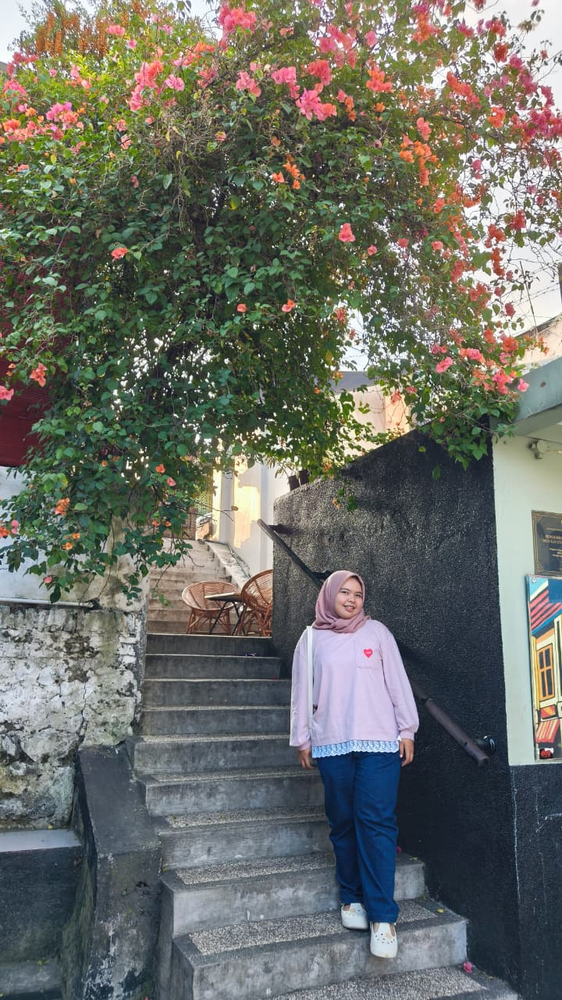
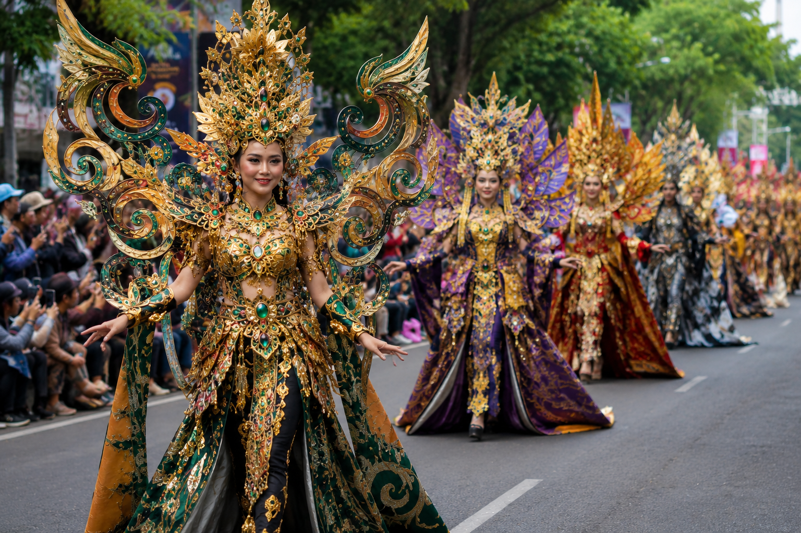
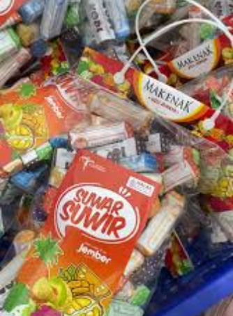
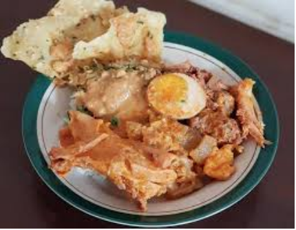

Indana Zulfa
Agar terdengar lebih akrab, kalian bisa memanggil saya Fafa
Saya berasal dari Desa Karangduren, Kecamatan Balung, Kabupaten Jember, sebuah desa yang berada cukup jauh dari pusat kota. Di tempat inilah saya lahir, tumbuh, dan menjalani berbagai proses kehidupan hingga membentuk pribadi saat ini. Lingkungan tersebut mengajarkan saya untuk terus belajar, berkembang, dan berusaha menjadi pribadi yang lebih baik dari waktu ke waktu.
Saya telah menempuh pendidikan tinggi di Universitas Brawijaya pada Program Studi Pendidikan Teknologi Informasi dan berhasil menyelesaikannya pada tahun 2025. Pendidikan tersebut menjadi dasar dalam mengembangkan pengetahuan dan keterampilan di bidang teknologi serta pendidikan.
Saat ini, saya sedang melanjutkan pendidikan melalui Program PPG Calon Guru di Universitas Negeri Malang. Program tersebut membantu saya memperkuat kompetensi sebagai calon pendidik yang profesional dan adaptif. Melalui proses ini, saya terus belajar untuk meningkatkan kualitas diri dan kesiapan dalam dunia pendidikan.

Keunikan Daerah
Pesona Keragaman Kabupaten Jember
Jember dikenal sebagai daerah yang kaya akan kreativitas, budaya, dan kuliner khas. Keunikan tersebut menjadikan Jember memiliki daya tarik tersendiri, mulai dari festival budaya berskala internasional hingga kehidupan masyarakat dengan identitas budaya yang kuat. Kabupaten ini terus berkembang dengan memadukan nilai-nilai tradisi dan inovasi modern, menciptakan harmoni yang menjadikan Jember sebagai salah satu daerah yang patut untuk dijelajahi dan dinikmati pesonanya.
Festival Budaya
Jember Fashion Carnival (JFC)
Jember Fashion Carnival (JFC) hadir sebagai simbol kreativitas masyarakat Jember yang mampu mengubah jalanan kota menjadi panggung seni penuh pesona. Ribuan peserta parade menampilkan kostum dengan konsep unik yang memadukan kekayaan budaya lokal, seni kontemporer, dan imajinasi tanpa batas. Suasana meriah yang tercipta di setiap penampilannya, menjadikan JFC dikenal luas sebagai festival seni modern dengan pesona kreatif yang mampu mencuri perhatian berbagai kalangan.
Jember Fashion Carnival (JFC) digagas oleh perancang busana ternama, Dynand Fariz, sejak tahun 2003. Kehadirannya membawa nama Jember semakin dikenal di tingkat nasional maupun internasional. JFC juga menjadi ruang bagi generasi muda untuk menunjukkan kreativitas dan semangat berkarya. Melalui festival ini, Jember tampil sebagai daerah yang berkembang melalui seni, budaya, dan inovasi.

✨ Parade kostum spektakuler dalam Jember Fashion Carnival
Kuliner Khas
Suwar-Suwir & Pecel Gudeg
Suwar-Suwir merupakan camilan legendaris khas Jember yang terkenal dengan rasa manis dan teksturnya yang lembut berserat. Olahan ini dibuat dari tape singkong yang dipadukan dengan gula serta bahan pilihan lainnya. Setiap potongannya menghadirkan cita rasa khas, lembut di lidah, serta aroma manis yang penggugah selera. Kini, Suwar-Suwir hadir dalam beragam varian rasa sehingga selalu menjadi pilihan oleh-oleh favorit para wisatawan.
Pecel Gudeg menjadi salah satu kuliner khas Jember yang memadukan cita rasa gurih, manis, dan sedikit pedas dalam satu sajian. Hidangan ini terdiri dari nasi, gudeg nangka muda, pecel sayur dengan siraman bumbu kacang, serta pelengkap seperti telur, tempe, dan sambal goreng.

🍬 Suwar-Suwir

🍛 Pecel Gudeg
Inspirasi dan Tujuan
Sudut Pandang Pendidikan
Menjadi guru profesional berawal dari keyakinan bahwa pendidikan bukan sekadar proses menyampaikan materi, tetapi upaya dalam membentuk karakter, pola pikir, dan masa depan peserta didik. Inspirasi tersebut tumbuh dari keinginan untuk menghadirkan pembelajaran yang adaptif, bermakna, dan relevan dengan perkembangan zaman. Setiap proses pembelajaran diharapkan mampu membuka ruang bagi siswa untuk berkembang, berpikir kritis, serta mengenali potensi terbaik dalam dirinya.
Peran guru tidak hanya ditunjukkan melalui penguasaan materi dan strategi pembelajaran, tetapi juga melalui komitmen untuk terus belajar dan berinovasi. Lingkungan belajar yang kreatif, nyaman, dan kolaboratif menjadi bagian penting dalam mendukung perkembangan peserta didik secara menyeluruh. Dengan semangat tersebut, pendidikan diharapkan mampu melahirkan generasi yang berkarakter, mandiri, dan siap menghadapi tantangan masa depan.
Menjadi guru harus siap belajar, berkembang dan memberi manfaat bagi individu lain